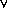

Introduction
Two techniques for giving semantics of programs are graphically
using data flow and control flow diagrams, or categorically using
mathematical structures such as monads or premonoidal categories.
Usually, the graphical presentation is semi-formal, and forms part of
the dataflow-oriented design process taught to most computer science
undergraduates, whereas the categorical presentation is used in giving
formal semantics, and is the subject of specialist research.
In this paper, we shall give a formalization of flow graphs, and show
how this can be used to give a categorical semantics in a framework based
on Power and Robinson's premonoidal
categories and Joyal, Street and Verity's
traced monoidal categories.
As an example of the flow graphs described in this paper,
consider a nondeterministic programming language with
a single imperative integer variable. Such a programming language contains
expressions which can be drawn as data flow diagrams such as:
We can also add nondeterminism to the language by adding a node
representing nondeterministic choice, for example:
Note that nondeterministic choice nodes are drawn differently to other
nodes. This is because other nodes can be duplicated or discarded
(for example all of the first examples are considered equal) but
nondeterminism nodes cannot (for example the two nondeterministic
expressions are not equal since the former might evaluate to 2 where
the latter can only evaluate to 1 or 4). We shall call nodes which
can be duplicated and discarded value nodes,
and nodes which cannot central nodes (the
terminology will be explained below).
We can add imperative statements to set an integer variable and get
its value, but these statements cannot be drawn in the same fashion as
the others, since order of evaluation is important for imperative
expressions. For example, if we were to make imperative expressions
central, then the following diagrams would be graph isomorphic:
To distinguish graphs such as these, we add a new class of
process nodes, and a new class of
control arcs. The control arcs allow
us to specify the causal order of a program, for example
we can now distinguish between the graphs:
We can add higher-order functions to this graphical language by
allowing function nodes which contain subgraphs, for example a
function to increment the variable is:
Function application is denoted using application nodes, for example
applying the increment function twice is drawn:
These graphs are viewed up to an equivalence where:
|
|
| = |
|
(Beta) |
| = |
|
(Beta) |
| = |
|
(Garbage collection) |
For recursive function declarations we allow cyclic graphs, for example
a factorial function is:
We can give a denotational semantics for this language using domains:
- value expressions
can be given a semantics in the category of
complete partial orders (not necessarily with bottom)
Cpo.
- central expressions
can be given a semantics in the category of
complete partial orders with binary join (to give
the semantics for nondeterminism)
Cpo.
- process expressions
can be given a semantics in the category of
complete partial orders with binary join,
bottom (to give the semantics of fixed points) and a
state of type N (to give the semantics for imperative statements)
StateP(N)(Cpo
 ).
).
where, when C is a symmetric monoidal category with object
X, StateX(C)
is the category given by:
This gives a concrete denotational semantics in particular categories of
domains. Abstracting away from the details of domain theory, we discover
that the structures necessary to give this denotational semantics were:
- A category V in which to interpret
value expressions. Since this language
has tuples and allows expressions to be duplicated or discarded,
V should be a strict cartesian category
(a strict symmetric monoidal category where the monoidal
structure forms finite products).
- A category C in which to interpret
central expressions. Central expressions
have tuples which cannot be duplicated or discarded, so
C should be a strict
symmetric monoidal category.
- A category P in which to interpret
process expressions. Process expressions
have tuples which cannot be duplicated or discarded and for which
evaluation order is important, so
P should be a strict symmetric premonoidal category
(defined by Power and Robinson
for such semantics).
- We have identity-on-objects inclusions
V
 C
P
which respect the product/symmetric monoidal/symmetric premonoidal
structure.
C
P
which respect the product/symmetric monoidal/symmetric premonoidal
structure.
- To model recursive declarations, we have a partial trace
in V. This is an adaptation of
Joyal, Street and Verity's
traced monoidal categories taking account of the fact that
we cannot find fixed points for every object in V.
In our Cpo example it is only objects which have least elements which
can be traced.
- To model functions we have adjunctions:
V[X, Y  Z]
Z]
 V[X
V[X  Y, Z]
Y, Z]
V[X, Y  Z]
C[X
Z]
C[X  Y, Z]
Y, Z]
V[X, Y  Z]
P[X
Z]
P[X  Y, Z]
Y, Z]
- To model recursive functions, we have all objects of the form
X Y
are traceable.
There are a large number of such triples, for example:
- Take V to be Set and
C and P
to be Rel.
- Take V to be any
partially traced cartesian closed category
with a commutative strong monad T,
a strong monad U, both satisfying the mono requirement,
and a monic natural transformation
T
 U
which respects the monad structure. Then
let C be the Kleisli category
VT
and let P be the Kleisli category
VU.
U
which respects the monad structure. Then
let C be the Kleisli category
VT
and let P be the Kleisli category
VU.
- Take V,
C and P
to be appropriate categories of mixed data flow and
control flow graphs.
Since there are so many examples of such triples of categories, it
would be useful if there was an initial such triple. Then
providing a semantics in this initial triple would be enough to
give a semantics in any such triple.
The purpose of this paper is to show that flow graphs form the initial
such triple of categories, so by giving the flow graph for a program,
its semantics is given for any categorical semantics fitting the framework
given above.
The paper is divided into sections:
The last section is more speculative than the others, since it requires
factoring the category of graphs up to beta-equivalence, eta-equivalence,
and naturality. The other sections do not require such factoring, and
view graphs up to an appropriate notion of bisimulation.
In each case, the main result is a soundness and completeness result,
given in an appendix. These results make heavy use of the graphical
presentation, which make the proofs much simpler to read. The style
of the proofs should be familiar to readers with a background in
process algebra, for example the normal form result for cyclic graphs
is similar to Milner's proof
of completeness of his axiomatization of strong bisimulation.
The observant reader may have noted that in the above example
(where the premonoidal category is given as a State
construction over a symmetric monoidal category) that the control line
can be considered as just another data line, carrying the value of
the state variable. For example we could consider the constructors:
as syntax sugar for:
This similarity is not a coincidence: the categorical basis of
the graphical presentation of premonoidal categories as single-threaded
graphs with one control line is that any premonoidal category
C P
is a full sub-symmetric-premonoidal-category of a state transformer
category D State(D).
This result is proved in appendix.
We also provide a sketch of how two-categorical structure can be used to
give an operational semantics for the
graphical language, adapting Milner's
semantics for action calculi.
The semantics has been implemented as a Java applet, which takes a
program text and draws the corresponding flow graph (all the diagrams
in this paper are drawn using this applet).
I would like to thank
Adam Eppendahl,
Philipa Gardner,
Andy Gordon,
Matthew Hennessy,
Paul Levy,
Rudi Lutz,
Valeria de Paiva,
Dusko Pavlovic,
Prakash Panangaden,
Eike Ritter,
Edmund Robinson
and
Peter Selinger
for discussions and suggestions.
Previous |
Next
 X
X  V)
is the initial category with finite products over a signature
V)
is the initial category with finite products over a signature
 C)
is the initial symmetric monoidal category over a signature
C)
is the initial symmetric monoidal category over a signature
 P)
is the initial symmetric monoidal category over a signature
P)
is the initial symmetric monoidal category over a signature